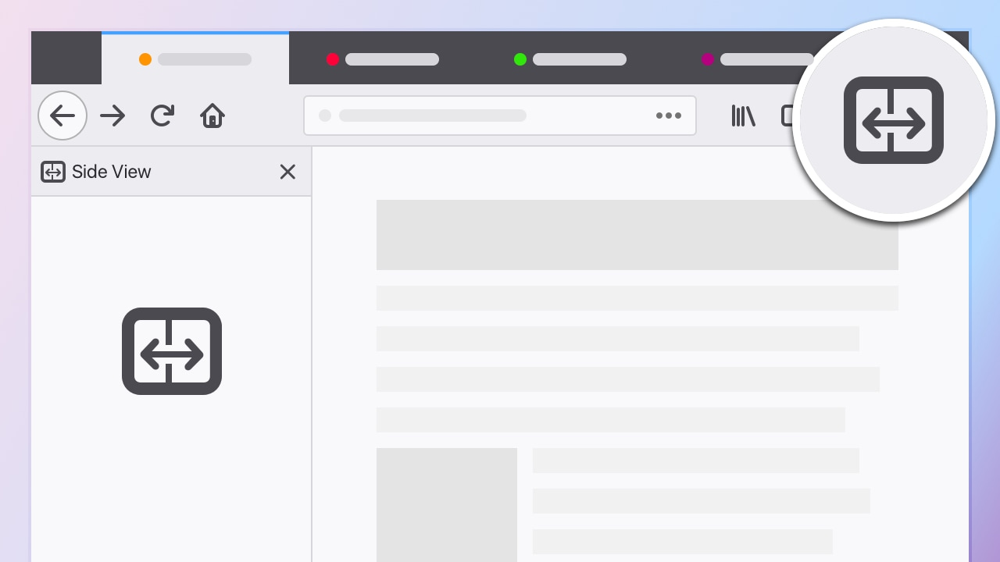
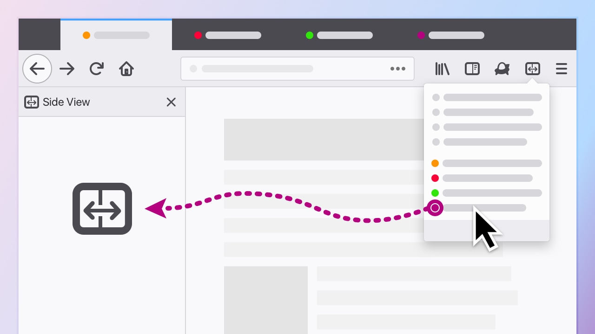
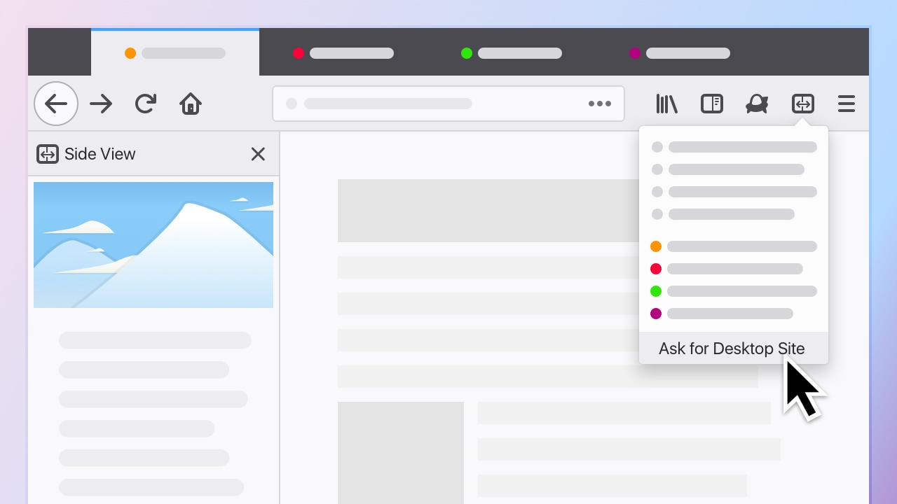
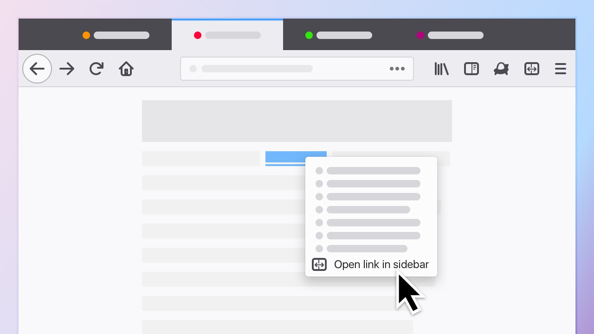

Introducing Side View,
a new way to multitask with Firefox.

Side View lets you send websites to your Firefox sidebar.

By default, Side View displays mobile sites to keep everything looking good in a narrow window.

You can also right click to open links in Side View.